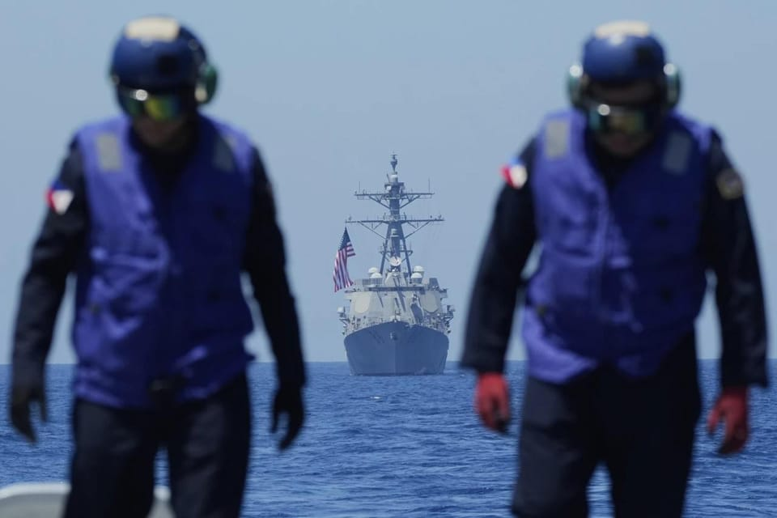

世界苦茶03月29日新闻 | 47条 | 缅甸强震伤亡数千

缅甸强震伤亡数千 | 中国电动汽车在欧洲销量大跌 | 美国称中俄觊觎格陵兰岛 | 中国在南海继续施压 | 西藏开始为达赖继承人造势
苦茶数据
美元兑人民币：7.27（昨日7.27，前日7.26）
美元兑日元：150.06（昨日150.81，前日150.16）
上证指数：休市（昨日3351，前日3349）
标普500指数：休市（昨日5580，前日5693）
比特币：83825（昨日86780，前日87529）
布伦特原油：73.63（昨日74.01，前日73.88）
中国新闻
• 西藏主席强调反分裂 ：中国西藏自治区主席嘎玛泽登星期五发表电视讲话，强调一定要坚决反对分裂，旗帜鲜明同达赖集团作斗争。据中国《西藏日报》报道，嘎玛泽登在纪念西藏百万农奴解放66周年电视讲话中说，“新旧西藏对比昭示着一个伟大真理：没有中国共产党就没有社会主义新西藏，就没有西藏各族人民今天的幸福生活”。嘎玛泽登续称：“我们要不忘来时路，走好前行路，深刻懂得惠从何来、恩向谁报、心跟谁走的道理，坚定不移听党话、感党恩、跟党走。”
• 黄岩岛现中国轰炸机 ：卫星图像显示，中国本周在南中国海争议海域黄岩岛附近部署两架远程H-6轰炸机。这是北京为加强对上述区域的主权宣示而做出的最新举措。据路透社星期五报道，美国太空技术公司麦克萨科技星期一拍摄的卫星图像显示，两架H-6轰炸机出现在黄岩岛以东区域。此次部署未被中国官方公开，也恰逢美国国防部长赫格塞斯访问菲律宾之际。
• 中方批美菲渲染威胁 ：美国防长访问菲律宾时说，两国必须并肩作战，共同应对来自中国的威胁。中国外交部批评，美菲间任何合作都不应该针对第三方，并呼吁菲律宾不要倚美闹海，更不要试图挑起军事对抗。中国外交部发言人郭嘉昆星期五在例行记者会上说，美菲间任何合作都不应该针对第三方或者损害第三方的利益，更不应该渲染所谓威胁、挑动对抗，加剧地区的紧张。他强调，南中国海的航行和飞越自由从来都不存在任何问题，并称一直以来在南中国海纵容盟友挑衅滋事的是美方，一再编造中国威胁南中国海航行自由伪命题的也是美方，持续在本地区强化军事部署，妄图破坏地区和平稳定的还是美方。
• 中方力争南海行为准则 ：中国外交部副部长陈晓东强调，中国将防范并坚决反对外部势力干扰破坏南中国海和平稳定，并争取在2026年达成《南中国海行为准则》。据中新社报道，陈晓东星期四在博鳌亚洲论坛2025年年会南中国海主题分论坛作主旨演讲时，指责当前个别南中国海当事国为谋求非法利益，不断在海上侵权挑衅，某些域外国家频频打“南中国海牌”，加大在南中国海的军事投射，给南中国海和平稳定带来风险挑战。他强调，中国将倡导各方坚持通过双边谈判解决海上争议，通过对话合作管控海上局势，防范并坚决反对外部势力干扰破坏南中国海和平稳定，通过建立规则塑造地区秩序。中国将坚定不移做南中国海和平发展的定海神针，愿同各方携手合作，不断书写南中国海和平稳定、繁荣发展新篇章。
• 李泽楷公司澄清与长和关系 ：香港首富李嘉诚旗下的长江和记拟出售巴拿马运河港口等资产引发北京不满后，他的次子李泽楷的公司——盈科拓展集团星期五向中国媒体澄清公司所有业务独立于长和。长和3月初宣布计划将包括巴拿马运河两个港口在内的43个港口，以190亿美元出售给美国财团贝莱德。亲北京的香港《大公报》过去两周接连发文抨击，质疑长和没有顾及中国国家利益，文章获中国国务院港澳事务办公室网站转载。长和现由李嘉诚的长子李泽钜掌舵，李嘉诚已于2008年从主席之位退下来。长和计划在4月2日前签署出售港口的协议。据《南华早报》《香港经济日报》报道，长和目前正分别与北京、港府沟通、讨论，寻找解决方案。
• 中企台非法挖角遭查处 ：中国大陆晶片代工领头羊中芯国际等被指在台湾违法从事业务及挖角高科技人才。综合中央广播电台和东森新闻报道，台湾法务部调查局星期五公告，3月18日至27日全台六处地检署同步侦办11家中国大陆企业来台非法从事挖角高科技人才案件，包括中芯国际、云合智网，均以“假侨外资”身分在台违法从事业务，并挖角台湾晶片设计工程师。调查局指出，中芯国际以萨摩亚商作为掩护，假侨外资名义来台设立分公司，并在台挖角。
• 习近平会见外企高管 ：中国国家主席习近平星期五会见国际工商界代表，40余位外资企业全球董事长、首席执行官和商协会代表参加会见，其中包括德国奔驰、日本丰田、韩国三星。据中国央视新闻报道，习近平上午在北京人民大会堂，会见国际工商界代表。央视也发布视频显示会见地点，工作人员在进行最后非常细致的准备工作，并说参加会见的包括美国联邦快递、德国奔驰、日本日立。有四家企业来自美国、15家来自欧洲、五家来自亚洲、一家来自南美洲。
• 甲亢哥中国行引热议 ：有“甲亢哥”之称的20岁美国网红IShowSpeed首次到访中国，他在上海和北京直播引起广泛关注。甲亢哥原名小达伦·沃特金斯，在YouTube拥有3720万粉丝。他星期一在上海开启中国行，连续直播六小时，期间与知名歌手王嘉尔一起打乒乓球，两人也一起享用海底捞火锅。这引起中国网民关注，“甲亢哥上海直播打破西方对中国滤镜”相关词条一度冲上微博热搜。甲亢哥他星期三转战北京，参观故宫及登上长城，同样连续直播六小时。上海和北京之旅这两则视频迄今分别获得超过587万和450万点阅。
• 学者解读活佛转世制度 ：中国藏学研究中心副总干事、研究员李德成说，国内寻访是活佛转世不可更改的重要原则。据中新社报道，中国记协星期四举办“新闻茶座”，邀请李德成以“藏传佛教活佛转世的缘起、发展和传承”为主题，为境内外媒体记者及外国驻华使节介绍藏传佛教活佛转世制度和相关原则并回答问题。李德成说，活佛转世制度是藏传佛教所独创的，该制度形成的社会基础是吐蕃王朝崩溃后，西藏社会出现分裂割据，藏传佛教各教派与世俗势力紧密结合，形成政教合一势力，为巩固和发展势力，需要强有力的宗教首领出现，这也为活佛转世制度的形成奠定了社会基础。
• 网信办拟加重删文处罚 ：中央网信办就修正《网络安全法》再次征求意见，调升不按有关部门要求删文的罚则，以防范新形势下网络信息内容安全风险对国家安全、政治安全带来的风险挑战。修正后罚则是：未按要求删文并保存记录者可罚款5–50万元；拒不改正或情节严重的罚款50–200万元，并对责任个人罚款5–20万元；造成特别严重影响后果的，罚款200–1000万元，并对责任个人罚款20–100万元。相比2022年9月征求意见稿，删除了罚则中的“禁止从业”项目，还删除了对于“发布违反本法的信息、但其他法律法规没有规定”的兜底罚则。
亚太印太新闻
• 缅甸国家管理委员会3月29日说，目前已统计到地震致1002人死亡，2376人受伤，另有多人失踪。已统计到曼德勒地区1591栋房屋、670座寺庙、60所学校、3座桥梁和290座佛塔被损毁。
• 缅甸强震，泰国首相应急 ：缅甸发生7.7级地震后，泰国首相佩通坦中断在普吉岛的行程，召开内阁紧急会议，商讨地震应对措施。新华社报道，缅甸实皆省西北部星期五发生7.7级地震，邻国泰国首都曼谷有震感。泰国首相佩通坦当时正在普吉视察，她收到有关地震的报告后，立刻暂停在当地的会议，并开会商讨应对措施。另据路透社社引述目击者报道，地震发生时，曼谷许多人惊慌失措地跑到街上，其中不少人还穿着浴袍和泳衣。媒体发布的照片则显示，曼谷市区有建筑物倒塌，大量民众到室外避险。
• 曼德勒清真寺地震中倒塌 ：缅甸中部发生强烈地震后，第二大城市曼德勒一座回教堂倒塌，导致10人丧生。美国地质调查局称，缅甸实皆省星期五发生7.7级地震。新华社引述缅甸媒体报道，曼德勒一座回教堂在强震中倒塌，造成至少10人死亡。另据曼德勒民众在社媒发贴称，当地一栋建筑倒塌，四五人被困。
• 曼谷高楼因强震倒塌 ：泰国首都曼谷一栋在建高楼因缅甸强震余波倒塌，至少五名工人遇难。缅甸实皆省星期五发生7.7级地震，波及邻国泰国，并导致曼谷一栋30层在建高楼坍塌。新华社报道，根据救援现场指挥中心最新数据，截至星期五晚些时候，已有五人丧生、九人受伤，仍有117人失踪。泰国副首相蓬探当天下午说，三名工人确认遇难，另有86人受困废墟之下。
• 柯文哲续押京华城案 ：台北地方法院星期五裁定，深陷京华城弊案的前台北市长柯文哲再度被羁押禁见两个月。这意味着柯文哲早前因血尿问题向法院申请具保停押的请求未获通过。综合台湾《联合报》和中时新闻网报道，柯文哲涉及京华城案、政治献金案被台北地方检察署依贪污罪等起诉，台北地方法院1月裁定羁押禁见三个月，押期至4月1日届满。法院星期五裁定，柯文哲4月2日起继续羁押禁见两个月。此外，法院还裁定威京集团主席沈庆京、国民党籍台北市议员应晓薇与前台北市长办公室主任李文宗继续羁押禁见两个月，并驳回沈庆京具保停止羁押声请。
• 台拟限陆生读关键技术 ：台湾教育部将于4月召开会议，研讨管制中国大陆学生赴台修读关键核心技术项目，以加强后续管控并有效维护国安。综合台湾《联合报》和中时新闻网报道，台湾行政院长卓荣泰星期在行政院会上说，教育部下月将召开“管制陆生修读我国国家关键核心技术项目”跨部会研商会议，并要求国防部、经济部和国科会等相关部会盘点并提报技术项目，以利后续管控与有效确保国安。台湾教育部当天证实上述消息，并称行政院自2023年起，依相关规定每年公告“国家核心关键技术项目及其主政机关”，共32项，其中包括国防相关科技及各部会攸关台湾产业竞争力等关键技术。
• 日本樱花提前盛开趋势明显 ：日本全国气温不稳定，造成樱花盛开期出现更大的不确定性。宫崎县在春季的3月份出现酷暑，本周气温直冲摄氏30度。东京上周下了一场小雪，本周白天气温如初夏，街上不少人穿上短袖衫。日本绿色和平组织发报告指出，日本樱花近10年的盛开期平均比1960年代提前7.4天。北部地区的变化更是明显，札幌市的樱花提前了11.6天盛开。
• 美国、日本和菲律宾3月28日在南海黄岩岛附近海域举行为期一天的联合海军演习： 美军表示，此举是为了支持盟友，建立自由开放的印太地区。菲军称，演习有助于加强其应对海上安全挑战和维护国家利益的能力。解放军南部战区表示，当天在南海海域进行例行巡航，警告菲律宾停止在南海挑起事端、升级紧张局势。演习期间，一艘中国护卫舰试图靠近演习水域，但在菲律宾护卫舰通过无线电警告后远离。当天，美国防长赫格塞思到访菲律宾，表示美国将与盟友合作，在世界各地重建威慑力，尤其是印太地区。菲律宾是赫格塞思亚洲之行的首站，此后他将前往日本。
财经新闻
• 欧盟筹备与美关税谈判 ：欧洲联盟正在确定它愿意对特朗普政府做出的让步，以确保美国部分取消那些已经开始打击欧盟出口、而且势将在4月2日之后增加的关税。知情人士透露，欧盟官员本周在华盛顿举行的会议上获知，没办法避开新的汽车关税和特朗普下周将推出的所谓对等关税。有关潜在关税削减协议最终框架的讨论也已启动。彭博社引述不愿透露姓名的知情人士称，这促使欧洲委员会开始为潜在协议制定“条款清单”，该清单将列出惩罚性贸易措施的谈判领域，包括降低其自身的关税、与美国相互投资以及放宽某些法规和标准。
• 欧元区通胀低于预期 ：法国和西班牙最新的3月份通胀低于预期，支持欧洲央行在4月份进一步降息的市场预期。一个不明朗因素是特朗普的关税政策，接下来会如何影响通胀和经济走势。法国星期五发布3月份消费者价格同比上涨0.9%，持稳的态势优于分析师预期的升高。在西班牙，3月份通胀放缓至2.2%——比预期的减速幅度更大，更加接近欧洲央行的2%目标。交易员对今年欧洲央行降息的押注略微增加，预测今年内共降息60个基点。这相当于两次25基点的降息，以及40%的概率会第三次降息。
• 理想汽车开源车载系统 ：中国电动车企理想汽车将开源自研车载操作系统。综合澎湃新闻和中国新闻网报道，理想汽车董事长李想星期四在中关村论坛演说时，作出上述宣布。李想介绍，理想汽车在2020年下半年出现全球汽车短缺时，萌生自研操作系统念头，并在2021年启动该项目，累计投入200多名研发人员和投资逾10亿元人民币。2024年，理想汽车首次实现了自研操作系统理想星环OS的上车。
• 长和出售港口将受审查 ：中国大陆市场监督管理总局将依法审查香港长和集团出售巴拿马港口交易。中国大陆市场监管总局星期五官方微信公众号“市说新语”通报，针对香港大公文汇网当天询问，据悉长和4月2日将与贝莱德签署巴拿马港口的交易协议，此交易是否要经过中国大陆的反垄断审查批准，市场监管总局反垄断二司负责人回应时说，该局注意到此交易，将依法进行审查，保护市场公平竞争，维护社会公共利益。大陆市场监管总局官网显示，反垄断执法二司负责依法对经营者集中行为进行反垄断审查。负责查处违法实施的经营者集中案件，查处未达申报标准但可能排除、限制竞争的经营者集中案件。开展数字经济领域经营者集中反垄断审查。监督执行经营者集中附加限制性条件。指导企业在国外的反垄断应诉和合规工作。
• 中国电车失守欧市份额 ：中国汽车制造商错失了上个月欧洲电动车需求回暖的机会，而大众汽车等更具市场基础的制造商则抢占了销量增长的最大份额。彭博社星期五报道引述汽车研究机构Dataforce数据显示，今年2月，在欧洲地区注册的电动汽车中，仅有6.9%由中国车企制造。这一比例远低于1月的7.8%，写下自2023年2月以来的最低水平。比亚迪和上汽集团旗下名爵等车企一直在努力将欧洲市场打造为出口重镇，但自去年欧盟对中国制造的电动车征收关税以来，这一进程遭遇阻碍。贸易壁垒导致中国车企在欧洲市场份额的增长停滞，此前多年保持的快速增长趋势被打破。
• IMF预测美经济放缓 ：国际货币基金组织预计，在特朗普推进激进的关税政策之际，今年美国经济将减速，但可预见的未来不会出现经济衰退。IMF发言人科扎克在星期四的发布会上说：“重大政策转变已经宣布，即将发布的数据表明经济活动将较2024年的强劲水平有所放缓，但经济衰退不是我们的基线预期。”特朗普做出了一系列关税威胁，对加拿大、墨西哥和中国这三个主要贸易伙伴的关税已经生效，更多措施预计将于4月2日出台。
• 中日韩经贸部长将会晤 ：时隔五年多，中国、日本和韩国将在本周举行经贸部长会议。据韩联社报道，中日韩经贸部长会议将在星期天在首尔举行。韩国政府消息人士星期四透露，韩国产业通商资源部长官安德根、中国商务部部长王文涛、日本经济产业大臣武藤容治将与会。
• 中方促美保持玩具零关税 ：中国玩具和婴童用品协会星期五呼吁美国保持玩具零关税。协会在微信公众号称，美国玩具品牌商、零售商，以及中国玩具制造商均向协会反映，美国政府单方面加征关税将严重损害两国人民的利益。中国玩具和婴童用品协会续称：“对此，我会呼吁美国政府从维护两国经贸合作、保障消费者和中美企业利益的角度出发，继续执行WTO协定中对玩具实行零关税约定。”
• 委内瑞拉对华石油出口攀升 ：在美国特朗普政府下令对委内瑞拉实施制裁和二级关税之际，委内瑞拉对中国的石油出口量正迈向近两年来最高水平。根据彭博社追踪的航运报告和船舶动态的初步数据，委内瑞拉3月对华石油日出口量预计将达到40万桶，可能创下自2023年6月以来的最高纪录。作为全球最大的原油进口国，中国一贯是委内瑞拉、伊朗、俄罗斯等受制裁国家折扣原油的主要买家之一。
• 日首相忧美关税冲击经济 ：日本首相石破茂指出，特朗普政府对汽车进口征收25%的关税将对日本经济产生“非常大”的冲击，并承诺将采取全面措施保护当地就业。石破茂强调，政府一方面努力掌握关税对关键行业造成的全部冲击，同时也需要考虑采取措施帮助日本企业融资。彭博社引述石破茂星期五在议会中的讲话说，他体认到这将对经济产生非常大的冲击，还需考虑企业的现金流措施。日本政府将采取一切可能的措施，以免影响国内行业或就业。
• 国务院发布就业支持方案 ：在就业形势仍然面临严峻挑战的当下，中国国务院发布方案，提出多项举措支持就业和创业，包括强化自主创业政策支持，以及开展大规模职业技能培训等。根据中国人社部官网，中国国务院就业促进和劳动保护工作领导小组星期四发布《加力重点领域、重点行业、城乡基层和中小微企业岗位挖潜扩容 支持重点群体就业创业实施方案》。根据方案，中国将从七方面推进实施岗位开发计划，包括挖掘先进制造等新质生产力就业潜力，推动消费新热点转化为就业新渠道，放大重大工程项目建设就业增量，围绕保障重点民生服务促进就业，拓宽劳动者城乡基层服务空间，提高民营企业和中小微企业就业吸引力，稳定机关事业单位和国有企业招聘规模。
• 美牛肉对华销售大幅下滑 ：美国政府星期四公布的数据显示，美国对华牛肉销售大幅下滑，此前数百家美国肉品加工厂的输华注册资质失效，导致相关产品无法进入中国市场。据路透社报道，中美之间的针锋相对关税争端也使美国肉类及其他商品的进口关税上调，削弱了中国买家对美国产品的吸引力。这一贸易摩擦为两国已经降至历史低点的关系增添新的压力。美国总统特朗普再次入主白宫，令中美再掀贸易战。截至本月初，美国已宣布对中国输美产品加征20%关税。中国本月采取反制措施，对约210亿美元的美国农产品加征报复性关税，其中对美国牛肉、猪肉和乳制品加税10%。
• 墨西哥争取关税优惠待遇 ：美国总统特朗普在全球范围内推进关税措施，墨西哥经济部长马塞洛·埃布拉德说，墨西哥至少可以确保对美出口享有比其他国家更低的关税。埃布拉德星期四在墨西哥总统辛鲍姆的每日新闻发布会上通过视频通话说：“如果关税达到如此高的水平，我们必须做的就是为墨西哥寻求优惠待遇。”随着特朗普加紧推行关税计划，辛鲍姆面临更大压力证明她能够保护墨西哥的经济和就业。特朗普宣布从4月3日开始对汽车进口加征25%关税，但含有美国零部件的墨西哥出口可能享有更低税率。
俄乌战争
• 俄指乌攻击俄能源设施 ：俄罗斯指责乌克兰攻击俄能源设施，违反此前的能源设施临时停火承诺。法新社报道，俄罗斯国防部星期五说，过去24小时内，乌克兰继续使用无人机和高机动炮兵火箭系统 ，向俄罗斯能源设施发动攻击；乌方还向俄边境库尔斯克地区的苏贾天然气计量站发射火箭弹，并向俄中部萨拉托夫炼油厂发射19架无人机。天然气计量站是用于天然气计量及贸易交接的装置。俄罗斯此前通过苏贾天然气计量站的管道，将天然气从乌克兰输送到欧洲的中转站，但由于乌克兰因战争而拒绝续约，天然气输送于今年1月1日停止。
• 俄盼中美关系维持平衡 ：俄罗斯副总理奥维尔丘克说，莫斯科必须平衡与北京和华盛顿的关系，三国领导人之间正在形成新的地缘政治态势。彭博社报道，奥维尔丘克星期五在中国出席博鳌亚洲论坛，他在谈到俄罗斯与中国和美国之间关系时说：“我们不应该以牺牲一个国家为代价，来发展同另一个国家的关系，反之亦然。”奥维尔丘克也重申，尽管面临制裁压力，俄罗斯经济仍表现出强大的韧性，并正在扩大与包括中国在内合作伙伴的关系，以减轻制裁影响。（翻評：俄羅斯退回到平衡外交！這是大的轉向）
• 普京提议设乌临时政府 ：俄罗斯总统普京建议，在联合国主持下，与美国、欧洲以及俄盟友共同讨论在乌克兰实行临时管理的可能性，以便在乌克兰举行民主选举，终结战争。普京星期四在俄西北部港口城市摩尔曼斯克接见核潜艇官兵时说：“待乌克兰建立一个有能力、受信任的政府，俄罗斯再与它开始和平条约谈判，签署全世界都承认、可靠和稳定的合法文件。”路透社引述普京说，原则上乌克兰当然可以在联合国、美国、欧洲国家以及俄国的伙伴等的支持下设立临时政府。他说：“这样做是为举行民主选举，产生一个有能力、受人民信任的政府，由他们进行和平条约谈判。”
• 王毅将访俄会晤领导人 ：中国外交部长王毅将在下周对俄罗斯展开为期三天的访问，并将在此期间与俄罗斯领导人会面。中国外交部发言人郭嘉昆星期五在记者会上宣布，应俄罗斯外长拉夫罗夫邀请，王毅将在3月31日至4月2日对俄罗斯进行正式访问。郭嘉昆介绍，王毅将在访问期间会见俄罗斯领导人，同拉夫罗夫举行会谈。
• 葡萄牙增援乌克兰军援 ：葡萄牙总理蒙特内格罗宣布，葡萄牙在部长会议上批准向乌克兰提供2.05亿欧元军事援助，用于在多个领域为乌克兰部队提供军事装备支持。蒙特内格罗星期四在巴黎参加“志愿者联盟”峰会后宣布此项决定。他认为，峰会再次凸显欧洲的团结精神。新华社引述葡萄牙国防部公布的数据说，迄今为止，葡萄牙已宣布向乌克兰提供4.55亿欧元军事援助和800万欧元人道主义援助。
• 志愿者联盟拟助乌克兰建军 ：由法英主导的“志愿者联盟”3月27日在法国巴黎举行峰会。31个国家代表及北约、欧盟领导人出席了会议。与会方认为，未来俄乌签订停火协议后，一支强大、装备精良的乌克兰军队将是确保乌克兰和欧洲安全的首要因素。为此，法英两国军队参谋长近期将派代表前往乌克兰，与乌方讨论未来乌军建设事宜。法国总统马克龙表示，法国和英国计划牵头在俄乌实现停火后向乌克兰派遣一支“保障部队”，确保停火协议实施。多个国家但并非所有成员都愿意参与这支部队。希腊、意大利明确拒绝派兵。
其他新闻
• 以色列空袭黎巴嫩首都 ：以色列军方对黎巴嫩南部和首都贝鲁特部分地区发动空袭，这是去年11月以色列与黎巴嫩真主党达成停火协议后，以军首次对黎巴嫩境内实施打击。法新社报道，以色列军方星期五说，部队当天拦截一枚从黎巴嫩射向以色列北部加利利地区的火箭弹，黎巴嫩应对此事负责。真主党方面否认参与射弹。以军称，当天还有一枚火箭弹从黎南发射并落在加利利地区。以军随后向黎南真主党目标发动空袭，黎媒报道称，以军战机当天飞越黎巴嫩上空。
• 加美领导人将通话 ：加拿大总理卡尼将与美国总统特朗普通电话。法新社报道，白宫官员说，美加领导人定于星期五上午通话。目前还不清楚双方通话的具体时间。卡尼曾于星期四表明，他会在一两天内同特朗普通话。
• 格陵兰组建新自治政府 ：丹麦自治领地格陵兰岛的四个政党，在美国副总统万斯到访前几小时，宣布组成新一届自治政府。综合路透社和新华社报道，格陵兰岛四个政党星期五签署联合执政协议，组成新一届自治政府。这四个政党在自治议会的31个席位中，共占23席。民主党在本月早些时候的选举中赢得最多席位，党魁尼尔森将担任自治政府总理，他曾敦促各党派搁置分歧，在美国特朗普政府的吞并威胁面前展现团结。
• 伊朗回应特朗普核信函 ：伊朗外交部长阿拉格齐说，德黑兰已经回复美国总统特朗普关于伊核计划谈判前景的信函，但并未透露信函内容。彭博社星期五报道，阿拉格齐告诉伊朗国家媒体，特朗普的信函由阿拉伯联合酋长国高级外交官转交给伊朗方面后，德黑兰于星期三通过调解人阿曼予以回复。阿拉格齐并未详细说明特朗普信函和伊朗回信的内容。他重申，只要特朗普政府继续推行“军事威胁”和“极限施压”政策，德黑兰将拒绝与美国进行间接谈判。
• 美官员聊天门遭法院追查 ：美国国安高层官员“聊天门”引发民事诉讼，一名联邦法官命令国防部长赫格塞斯等特朗普政府内阁成员将本月早些时候在Signal应用上的对话内容悉数保存。华盛顿联邦地区法院首席法官博斯伯格星期四在亲自由派公民组织“美国监督”提起的诉讼中发布了这项临时命令。这个非营利组织指控，讨论美国对也门军事打击计划的群聊参与者违反了记录保存法，因为他们发送的信息可以设置为自动消失。这项命令涵盖3月11日至3月15日期间所有的Signal聊天记录。彭博社引述博斯伯格说，若被告的措施令法庭满意，这项命令将在4月10日到期。
• 特朗普制裁知名律所 ：美国总统特朗普签署针对律师事务所威凯平和而德的行政命令，以这家律所与前特别检察官罗伯特·米勒的关系为由，将这家大型律师事务所列为打击目标。特朗普星期四签的行政命令暂停威凯平和而德律师事务所员工的安全许可，限制他们进入联邦大楼并终止涉及这家律所的政府合同。特朗普已使用类似命令对付Jenner and Block、博钦和科文顿。他还废除了一项针对Paul Weiss的行政令，因后者同意在特朗普任期内投入4000万美元用于无偿法律服务，以支持其政府的目标。彭博社指出，威凯平和而德引发关注是因为它聘用前联邦调查局局长米勒，后者曾领导一项对特朗普和俄罗斯涉嫌干预2016年大选的特别检察官调查。在开展这项调查之前，米勒是威凯平和而德的合伙人，在调查结束后他重新加入了这家律所。
• 澳总理宣布5月选举 ：澳大利亚总理阿尔巴尼斯宣布，澳大利亚将于今年5月3日举行联邦议会选举。阿尔巴尼斯星期五一早前往位于首都堪培拉的总督府面见澳总督莫斯廷。他在随后举行的新闻发布会上说，莫斯廷已接受他的提请，澳大利亚将于5月3日举行联邦议会选举，以组成澳第48届联邦议会。新华社引述阿尔巴尼斯在回答记者提问时的话说，如果他领导的工党赢得此次选举，他将再次出任总理。
• 美国副总统万斯夫妇及其他高级官员3月28日访问位于格陵兰岛北部的美国皮图菲克太空基地： 万斯发表讲话指责丹麦对格陵兰岛的安全、防务等方面“投资不足”，没有履行应尽责任。希望格陵兰岛选择与美国合作，达成某种协议来确保格陵兰岛和美国的安全。丹麦首相弗雷泽里克森反驳了万斯关于丹麦在北极防御方面做得不够的说法，表示丹麦正在通过新的北极船只和无人机提高该地区防御能力。她还强调北约保护北极以应对俄罗斯威胁的责任。她表示丹麦曾在反恐战争中与美国并肩，万斯关于丹麦的说法“不公平”。在万斯抵达前几个小时，格陵兰岛宣布组成新一届自治政府，延斯-弗雷德里克·尼尔森将出任新一届自治政府总理。尼尔森批评万斯此行对格陵兰岛“缺乏尊重”，尤其是在该岛的政治未来仍是敏感话题的背景下。他强调，格陵兰岛不出售，格陵兰岛无意成为美国的一部分。他呼吁各党派在“外界压力”面前保持团结。其他政党官员和民众也普遍反对加入美国。最初，万斯夫妇宣布将前往锡西米尤特市观看狗拉雪橇比赛，但在丹麦和格陵兰岛的抗议后，他改变行程，仅访问美国皮图菲克太空基地。
• 皮卡丘在土耳其反对埃尔多安的抗议中意外成为抵抗象征，引发网络热潮： 说到令人震惊的发展，一场反对土耳其总统雷杰普·塔伊普·埃尔多安的抗议活动突然变得“电力十足”：一位身穿皮卡丘全身装的抗议者在网络上走红，有人称这位宝可梦角色成了意外的抵抗象征。这名被旁观者称为“皮卡丘”的装扮者加入了抗议队伍，抗议者反对总统埃尔多安，随后在警方部署水炮与防暴装备驱散人群时，这位“皮卡丘”也被拍到逃离现场。据报道，目前已有约1900名抗议者被拘留，多名报道现场情况的记者也被逮捕甚至被驱逐出境，其中包括BBC记者马克·洛文。
• JD·万斯警告称“有非常强的证据”表明中俄觊觎格陵兰岛： 副总统JD·万斯周五批评丹麦对格陵兰岛“投资不足”，称“有非常强的证据”表明俄罗斯和中国想要这座岛屿及其资源。万斯在格陵兰皮图菲克太空基地发表此番言论之际，总统唐纳德·特朗普正在倡导美国接管该岛。他在访问中表示：“我们向丹麦传达的信息很简单：你们没有尽到对格陵兰人民的责任。”“丹麦在为该基地、为我们的驻军，乃至为格陵兰人民提供必要资源方面明显落后，我认为这让他们在面对俄罗斯、中国以及其他国家的侵略性行为时变得更加脆弱。”